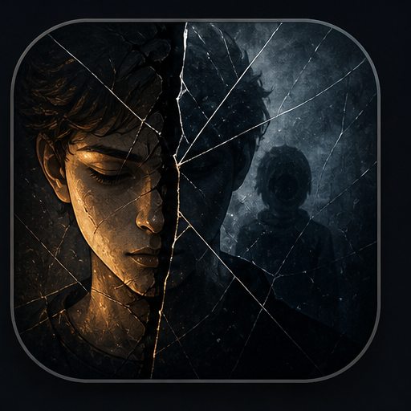
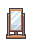
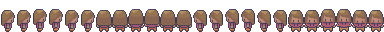
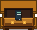

Квартира
Безопасное начало, где простые дела создают ритм и дают игроку освоиться.

Reflection2D story game
Тихая история о комнате, зеркале и выборе, который постепенно выводит игрока из привычного дома к Лесу Сомнений, Деревне Связей и Горе Целей.
Начало
Игрок начинает дома: заправляет кровать, приводит кухню в порядок, получает сообщение от мамы и замечает тень в зеркале. Бытовые действия постепенно становятся проверкой того, насколько честно игрок готов говорить с собой.
Reflection не ищет правильный ответ. Система выбора собирает личный профиль и в финале возвращает игроку спокойный, но прямой результат.
Настроение



Локации
Безопасное начало, где простые дела создают ритм и дают игроку освоиться.
Темная дорога с фонарем, шепотом и первой настоящей проверкой выбора.
Место встреч, разговоров и тихих решений рядом с теми, кто просит внимания.
Финальный подъем, где ответы собираются в профиль и личную рекомендацию.
Системы
Список дел открывается клавишей I и меняется по мере выполнения событий.
Ответы влияют на метрики: рост, покой, эмпатию, уверенность и самооценку.
Шаги, шепот, вода, лампа и меню поддерживают атмосферу без лишнего шума.
Три сохранения позволяют пройти историю заново и сравнить свой путь.
Windows build
Скачай архив, распакуй папку и запусти Reflection.exe. Java уже лежит внутри runtime, поэтому отдельная установка не нужна.